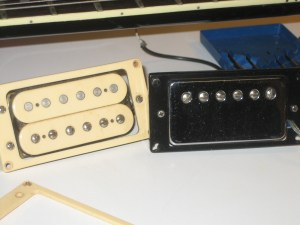
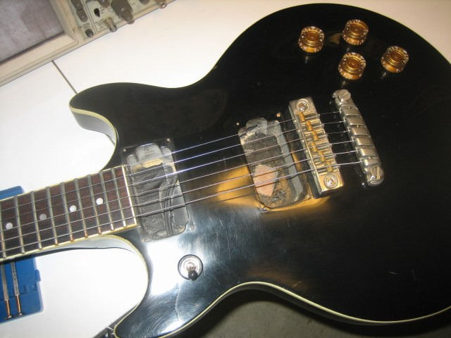
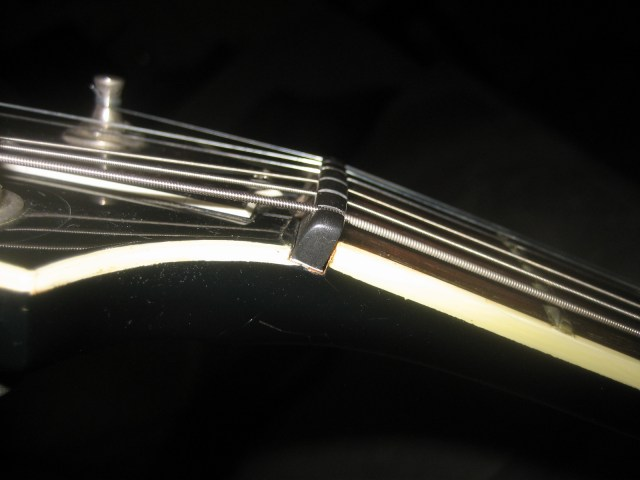
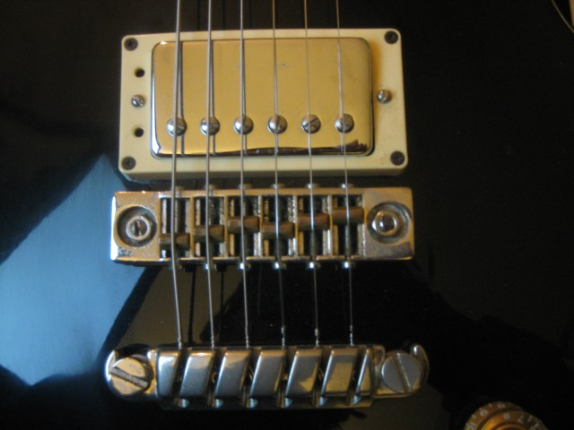
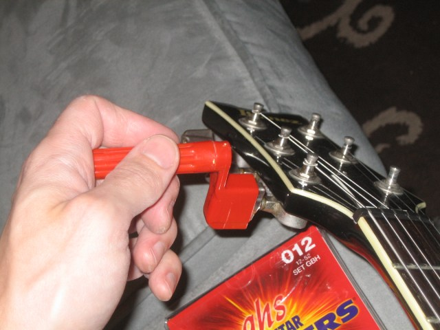
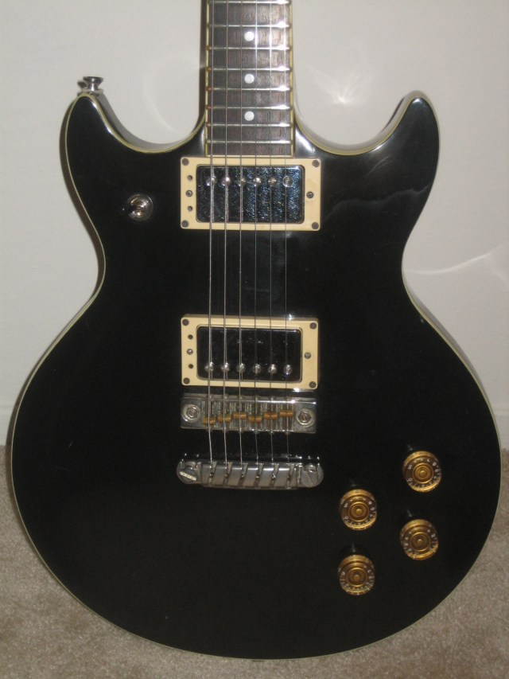

Guitar tech – Ibanez Artist
I just got my Artist cleaned up and put back together again with the Gibson humbuckers that I got for it a few years ago. This project has been sitting around on my bench for a long time now, so it feels good to get it all done and out of the way.
The back story is that I really like the way my Les Paul DC studio sounds, but I wanted a guitar with a little more mass to it, but not as much as a Les Paul Standard. I also like the double cutaway body style, so I was on the lookout for something that solid that I could outfit with the Gibson pickups.
One day when I was in Baltimore I stopped into a Music-go-Round and spotted this black Ibanez Artist with full binding. It doesn’t have the scalloped tailpiece that is found on most of these guitars and it doesn’t have the fancy headstock inlay. Judging by the serial number it was made in 1980 and it has a little bit of damage to the finish and the inlays. It looks like the neck was banged by the looks of some cracks in the paint near the heel.
I’ve got a few pics of the process:

The factory pickup is on the left. The Gibson pickup is on the right. I got the pickup pair on eBay as pulls from a Les Paul Studio. The LP Standard uses the same pickups.

The neck pickup fit perfectly into its cavity but the bridge pickup didn’t fit so well. I got it in there but unfortunately the pickup is tilted at a severe angle since there isn’t quite enough room on the bridge side of the cavity. I’ll go back at some point and route this out a little bit so that the pickup fits perfectly.
The pickup rings were drilled for Ibanez’s three screw pickup mounting pattern. The new pickups were two-hole mount. I didn’t want to drill out the factory pickup rings, but in the interest of moving this project forward, I did the deed anyway. Hopefully I the stock guitar gods will forgive me this. I did notice that there was a company selling converter kits that bolted to the pickup to convert it to a three-hole mounting pattern. Pretty clever, but again, I didn’t want to bother with that.
Once I had the pickups in and adjusted I lowered the action a little bit at the bridge. I felt like the strings were a little high when sighting down the fretboard and looking at where the pickups were sitting. Unfortunately I started getting some fret buzzing and noise. I went up the neck looking for the trouble spots and found that it was really only the first fret that was buzzing. That can be fixed by raising the nut a little bit, so that’s what I did. I inserted the blade of a pocket knife between the nut and the fretboard and wiggled it a little bit to break the glue that was holding the nut in place. I cut some cardboard shims (two of them) from an index card and placed them under the nut to stand it off of the neck a little bit. Ordinarily I’d use a little brass sheet for the shims, but I don’t have any on hand right now. I can always go back and replace the shims. I’m not a fan of gluing the nut, I just let the string tension hold it in place.

Once I had the action set up, I set the intonation. I found a nice guitar tuner here That I used while setting the intonation. It really helps to have an accurate tuner that does pitch detection instead of trying to do this part by ear. You really need to be accurate down to a few cents, and while you can do it by ear, it is much faster to do it visually. I set all of the strings in less than 10 minutes this way.

I put a new set of .012 GHS Boomers on next.

I thought I’d have to set the intonation again, but actually the bass strings were slightly better intoned than before. I left the strings slightly short the first time around, and now the heavier gauge strings were closer than the lighter ones. I’m going to have to think about this for a minute, since I expected it to go the other way.
Here’s the final result. I’ve been playing it for the last hour or so to break in the strings, and I’m really happy with how things turned out. I’ll probably route out the bridge pickup cavity so that I can get the pickup adjusted correctly and then re-set the action to match and set the intonation. For now it plays and sounds great though, so I’ll just enjoy it.
